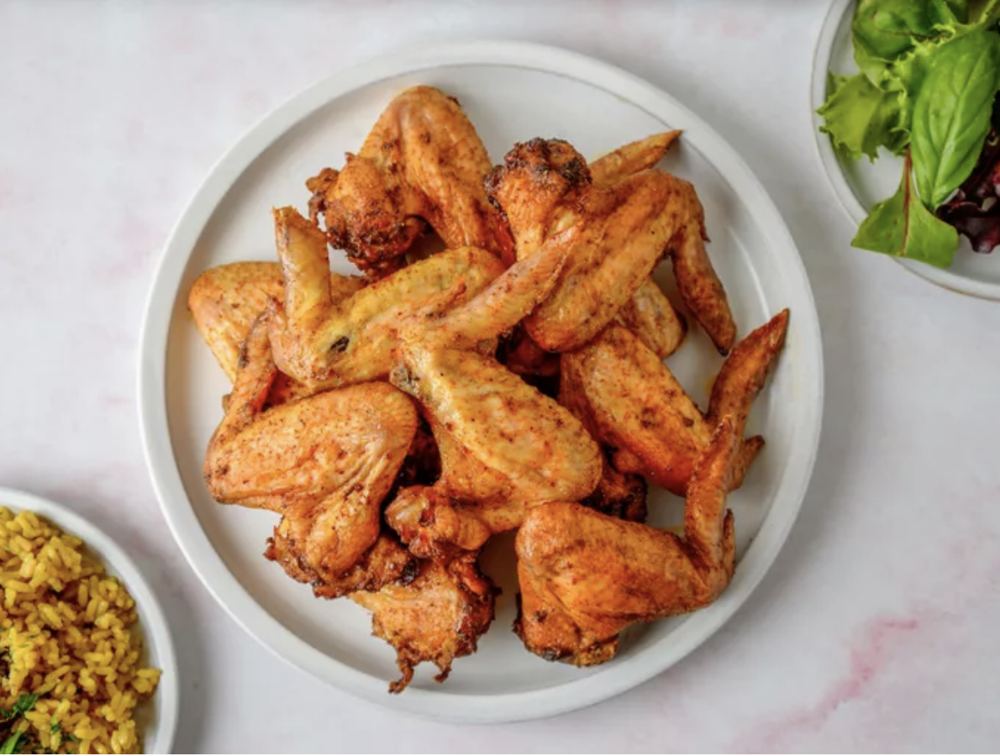

Chicken Wings

Juicy and Crispy Chicken Wings
I love chicken wings, I've had them from numerous restaurants, and made them myself. I've finally perfected the
cooking process, and will never be able to eat them any other way.
Ingredients
- Chicken Wings
- Your favorite Chicken seasoning
- Some sort of BBQ seasoning (I perfer Flavor Mate Smoked Memphis Barbecue Seasoning)
- Salt (optional)
- Pepper
- Pellet Grill
Steps
- Season wings with binder of your choice
- Add seasonings, with the BBQ seasoning as the main seasoning (only a pinch of salt, if any)
- Heat Pellet Grill to 450 degrees Fahrenheit
- Add wings to the Pellet Grill
- Turn the wings over once they start browning (your cook time will vary)
- Check the temperature of the wings to ensure they're thorougly cooked (165 degrees Fahrenheit)
- Pair wings with sauces and sides of your choice